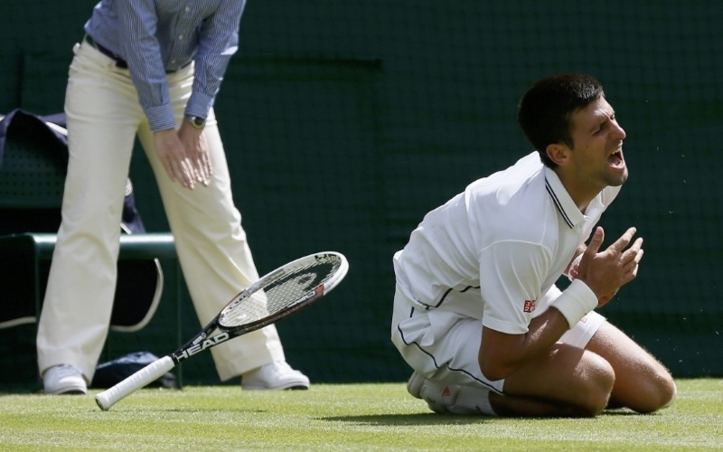

Muscle strain is one of the most common injuries in tennis. When an isolated large-energy appears during the muscle contraction and at the same time body weight apply huge amount of pressure to the lengthened muscle, muscle strain can occur. Inflammation and bleeding are triggered when muscle strain occurs, which can result in redness, pain and swelling. Overuse is also common in tennis players of all levels. Muscle, cartilage, nerves, bursae, ligaments and tendons may be damaged from overuse. The repetitive use of a particular muscle without time for repair and recovery is the most common cause of injury.
